Sign in
Search
Top 5 Songs of 2017
Previous
Next
Duration:
Status: Loading
Restart
Playing Information
0

C - I - A - R - A Pull up your pants (just like 'em) Take out the trash (just like 'em) Gettin' your cash like 'em Fast like 'em Girl, you wanna act like he did (I'm talkin' 'bout) Security codes on everything On vibrate so your phone don't ever ring Joint account and another one he don't know about (hey) Wish we could switch up the roles and I could be that Tell you I love you, but when you call, I never get back Would you ask them questions like me, like where you be at? 'Cause I'm out, four in the morning on the corner, rolling, doing my own thing What if I, had a thing on the side Made you cry? Would the rules change up or would they still apply? If I played you like a toy Sometimes I wish I could act like a boy Can't be getting mad what, you mad? Can't handle that Can't be getting mad what, you mad? Can't handle that Girl, go ahead and be (just like 'em) Go run the streets (just like 'em) Go home, missin' sleep like 'em, creep like 'em Front wit' your friends Act hard when you wit' 'em, like 'em Keep a straight face when you tell a lie Always keep an airtight alibi Keep it hid in the dark What he don't know won't break his heart (hey) Wish we could switch up the roles and I could be that Tell you I love you, but when you call, I never get back Would you ask them questions like me, like where you be at? 'Cause I'm out, four in the morning on the corner, rolling, doing my own thing What if I, had a thing on the side Made you cry? Would the rules change up or would they still apply? If I played you like a toy Sometimes I wish I could act like a boy Can't be getting mad what, you mad? Can't handle that Can't be getting mad what, you mad? Can't handle that Can't be getting mad what, you mad? Can't handle that Can't be getting mad what, you mad? Can't handle that If I was always gone Let the sun beat me home (Would you like that?) I told you I was with my crew when I knew it wasn't true if I act like you Walked a mile off in your shoes (Would you like that?) Messing with your head again Dose of your own medicine What if I, had a thing on the side Made you cry? Would the rules change up or would they still apply? If I played you like a toy Sometimes I wish I could act like a boy Can't be getting mad what, you mad? Can't handle that Can't be getting mad what, you mad? Can't handle that Can't be getting mad what, you mad? Can't handle that Can't be getting mad what, you mad? Can't handle that R-A, go, here's the clutch If I paged you (Would you like that?) Had friends (Would you like that?) Never call (Would you like that?) No, no, you wouldn't like that, no! What if I, made you cry? Would they still apply? What if I, if I played you like a toy Sometimes I wish I could act like a boy
T1
T2
T3